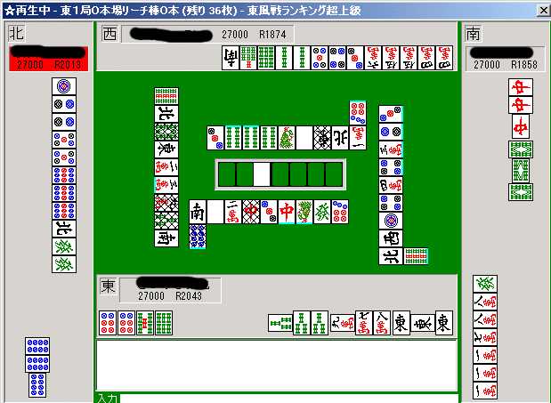

最強水準になるための麻雀講座：
「読み」の技術論
とつげき東北が読みの方法論について具体的な戦術を書く。
当然のことだが、これは世界でもっとも優れた「読み技術」の講座になる。
発言の根拠はシステマティック麻雀工学で公開している理論、シミュレーション、人間参加の実験結果による。
妄想に根拠を置いたすばらしい批判の数々が予想されるが、IQ120未満の人間の言うことを聞く必要はない。
諸君の「読み」がヘタクソな理由も読まれると良い。
麻雀に必要な読み
成績を向上させるために必要な読みは主に
・山牌に残っている枚数の読み（ツモる牌の読み）
・他家の役の推察
・他家の当たり牌がどれであるか（正確にはどれでないか）の読み
である。
簡単に言ってしまったが、もちろん例えば「山牌」を推測するためには、他家のメンツがどこに作られるかを知る（読む）必要があるわけで、上の3つは各々連関した技術である。
しかし、実際上に使用する場合は、上の3つの読みをそれぞれ場面に応じて独立に行うことが多い。
自分の手牌について考える場合は1つめ、ターツ選択したり他家の食い仕掛けに対処したり降りるときは2つめ、ベタオリするときは3つめ、という具合にである。
これらを全部ひっくるめて考えようとしていると、何もできなくなってしまう。
麻雀の天才が現れれば別だが、麻雀が得意でIQ140のとつげき東北にもそんな作業はできない。
「全ての読みを考慮に入れる」ことは、全ての読みを適当にやることに等しい。無駄である（実際、それはシステマティック麻雀研究所のテストで示された）。
当たり牌の読みについては「ベタオリ技術論」において書いたことでほとんど充分なので、ここでは触れない。
また、他家の役の推察については一部「ベタオリ技術論」に記した。それについては統計データを増やすことでより深化できるが、軽く触れるにとどめる。
ここでは、「山牌に残っている牌を読む（ツモる牌を読む）」ということができるようになろう。
例えばチートイツをやっている時、何で待てば良いのかということがわかる。
他にもターツ選択で迷ったとき、どちらを嫌えば良いのかということにも役立つ。
ついでに、他家がどのあたりにどの程度牌を使っているかについて、見当をつけることもできるようになる。
読みの方法論
山に残っている牌を厳密に予測するためには、他家がどの部分にどんなメンツを作ろうとしているかを知る必要がある。
つまり、山牌読みができるようになれば、他家の当たり牌を読む技術も格段に上昇する。
実際、「山牌読み」を上手に行えるコンピュータMJ-0ルーチンは、そのまま「当たり牌読み」MJ-1ルーチンとしても、人間平均よりずっと高い成績を収めている。
しかし、一体どうやって他家のメンツなど読むのだろうか？
人によって打ち方は違うし、点数状況によっても違う。様々な要素があって考えようがないように感じるかもしれない。
システマティックに打つということは、そこで「状況による」と判断を放棄することではなく、「わからない要素はランダム」と仮定して結論を導き、同じ状況で同じ牌を切ることである。
・牌の組み合わせ数のみによって読む
例えば「メンツを1つ作ろう」と思ったら、345とか456を作るのが簡単である。111を作るのは難しい。既に3枚切れの4を使って234を作るのは非常に難しい。
いくら打ち手本人が「ドラ近辺のメンツが欲しい」と思っていようが、「アンコが欲しい」と思っていようが、統計的な「メンツのできやすさ」には厳然たる違いがあって、多くの場合は「ドラアンコったらいいなあ」などの打ち手の意志より、統計的に妥当な結果の方が生じるわけだ。
・打ち手の意志で読むことは、読みとして充分有効に機能しない
トイトイ狙いで3ポンしているような場合は、もちろんトイツ型の待ちが普通よりは多くなる。それでも、アンコ+1枚になっていることもあるし、無理トイトイのためにまだ手の内は2279などの形になっていることも少なくない。
そもそも、まだ場に2枚以上見えていない牌などたくさんあるのが普通で、そのうちどれがアンコやトイツになるかはわからないのだ。
染め手を含め、食い仕掛けの場合は打ち手の意志を「ポンチー」の形である程度実現しやすいため、若干影響は変化してくるものの、基本的に「打ち手の意志を読む」よりも「牌の組み合わせを読む」方が、多くの場合は有効である。
・点数状況で読むこともあまり有用ではない
点数状況を読む方法も考えられる。
点数状況の読みとは例えば「トップと3500点差、3位と20000点差の2位が裸単騎になっていて、役が白しか見えていないなら、多くの場合はその単騎はドラになっている」という読みに使うことができる。
しかしこれはかなり限定的な読みになる。例えばオーラス、トップと1400点差の2位で、私ならヤクハイしか役がなくても、ヤクハイをポンして食い仕掛けをすることが多い。実は1900点差などでもそうだ。直やツモ（相手が親の時）や他家のカンや、あるいはリーチ棒が出ることを充分狙えるから、得なのだ（トップが放銃を恐れてベタオリした場合、和了率自体も1.3倍程度まで上げることができるし、流局率も大幅に上昇し、逆転率は高くなる）。「トップと1900点差だからドラは1つあるな・・・」という読みはひどく不完全である。
だいたい、相手が点数状況を正しく把握して攻めて来ているかどうかもわからない。
また、「点数状況による読み」をするためには、点数状況自体の有利不利について知っている必要がある。が、点数状況判断のテストで、超ランの強豪たちはコンピュータの統計データにあっさり完敗した。
このことは「点数状況で読む」方法を根拠にすえることには、（少なくとも能力的な意味で）あまり意味がないことを物語っている。
・牌の切り順の読みは、断片的すぎて使いにくい
「第一打で8を切ると、9がない確率が高い。」それは確かにそうだ。
「途中で手出しで5マンが出たから、その周辺は危険だ」そうか？（他に可能な組み合わせが多ければ多いほど信用できない）
「4より1を後に手出ししたから、その周辺にトイツやアンコがあることが多い」そうか？（たまたま頭がなくてツモってきた1をしばらく残したりということは多い）
・牌がどこから出たかというような読みは役立たない
確かに超のつくドシロウト相手なら、なんとなくそれでわかることがある。特に効くのは染め手かどうかという場合などだ。
しかし、こういう読みは、10回に1回だけでも、重大な局面で「ブラフ」を入れられると、とたんに役立たなくなる。
ブラフといっても簡単なことだ。捨て牌候補をいくつか、山のどこかにランダムに置いておくだけでいい。
ベルヌーイ試行的な2値の読みは、外れる確率が少しでも入ってくると、とたんにデメリットの度合いが増加して、ほとんど役立たなくなってきてしまう。
牌がどこから出たことによって、あるメンツが存在する確率が20％増加し・・・というような細かい計算ができる打ち手は現段階でいない。
「牌の組み合わせ数で読む」ことをメインにして、それだけを充分に磨くことがまずは大事だと言える。
少なくともそれだけで、「山牌読みテスト」でコンピュータが出したような、人間を圧倒的に超える読みをすることができる。
それが充分に（コンピュータレベルで）身についてから、他の「読み」に手を出せばいい。
もっとも、コンピュータレベルで「単純な読み」をすることが難しいから、麻雀は奥が深いのである。
麻雀の奥が深い理由は「複雑な読み」が存在するからではない。
読みの実践例
まず、この場面で山残っている可能性の高い牌は何だろうか？
また、下家の待ちとして考慮すべきは何だろうか？
山牌に残っている可能性の高い牌を読むときは、
・ある牌が、シュンツとして構成されやすい度合いを概算すること
・「アンコがどこにあるか」「トイツは誰が持っているか」などは基本的に読めないので、考えないこと。
まず字牌に着目しよう。
字牌はもともと「シュンツとして使えない」ために、ほとんどが場に出ると考えて良い。
たとえこの場面のように、下家がトイトイくさかったりしてもである。
東はあと3枚弱、西はあと2枚弱、北や白にいたっては4枚近く、山に残っていると考えて良い。
ただし、山に残っていることと場に出ることは、王牌の存在のため1vs1には対応しないので注意。
次に数牌。
3マンが4枚見えて壁になっているので、12マンはもうシュンツとして使うことができない。
つまり（アンコやトイツを考えず、誰も降りないなら）2マンは4枚近く、1マンは3枚近く、まだ山に残っているわけだ。
ただし12と持っていて3を待っている形は考えられるので、少し補正しても良いのだが、確率が非常に小さいので人間の直感でどうこうできるレベルではなさそうに思う。
また67ソウがたくさん見えている。これだけあれば、8ソウがメンツとして使用できる可能性は非常に低い。
また、6677ピンがあるのに8ピンが見えていないので、8ピンも山に残っている枚数がある程度多いと判断できる。
上記から、山に残っている牌は
北・白＞2マン＞東・1マン＞8ソウ・8ピン
のような順で多いことが読める。
例えば今チートイをテンパイしてリーチするなら、北や白で待てば良いことがわかる（2マンは、3マンの壁が他家から見えていないため、降りられると出にくいが。ただし、相手が攻めてくるなら「メンツとして使えない」ので非常に出やすい）。
MJ-0にこの状況を読ませた結果は、このようになった。
（牌のところにある数字は、山に残っている期待枚数を表す）
北・2マン・白＞東・1マン＞8ピン＞8ソウ
であり、さきの読みが「MJ-0と非常に近い」ことがわかる。
そして、MJ-0に近いということは、超ランレベルを遥かに超えた読みができているということだ。
6ソウの壁の存在で、5ソウが出る確率は4ソウなどが出る確率よりも高くなっている。
こういった細かいことまですぐに読めるようにするのは難しいが、とりあえず上み挙げた7枚くらいの順序付けができれば充分である。
「とつよ、こんなに簡単でいいのか！？」
「読みはもっと深いものだ」
「下家がトイツやアンコで持っている可能性はどうなる！？」
残念ながら、今まで麻雀界が、簡単に解ける問題をこねくりまわして「解いた気になっていた」だけなのだ・・・。
こんな簡単な読みだけが大事であり、複雑な読みなどはほとんど必要ではなく、そして、簡単な読みをマスターした人がいなかったのだ。
読んだ気になり、その結果の検証さえしなかったから「嘘の技術」としての「読み」が信じられていただけだ。
諸君の読みは、オカルトだったのだ。
下家は確かにトイトイをやっているような印象もある。
しかし、仮にそうだとしても、2マン・北・白・東・1マン・8ピン・8ソウなどは、いずれもその構成牌となりえる。
つまりそのうち1つが、実際にアンコやトイツになっている確率は高くない。他の牌も入れれば、1/10とかその程度の確率になる。
そもそも、中ドラドラだという可能性だってある。そうすると、特定の牌がトイツやアンコになっている確率は1/20など以下となるだろう。
山牌に残っている枚数期待値にほとんど影響を与えない。
というわけで、これに対して降りるのであれば、「ドラの遠く」「場に3枚以上見えている端牌」などを切るべきということがわかる程度だ。
6ソウを切ることと白を切ることのどちらが危険か、この段階ではなんとも言えない（むしろ6ソウの方が危ないように思うが）。
もちろん、自分の手がここまできれいなら、完全無視して（ドラでも楽勝切って）攻めれば良い。
「アンコがどこにあるか」「トイツは誰が持っているか」などは基本的に読めないので、考えないこと。
と書いたとおり。「終順になっても1枚も出ていないからアンコくさい」などの読みは全くしなくて良い。
山牌読みテストでも、そういった要素を無駄に考えた人（読みについて色々語っている人）は低得点だったようだ。
なお、この段階で山に残っていた枚数は
2マン 2枚
北 1枚
白 4枚
東 3枚
1マン 4枚
8ピン 3枚
8ソウ 4枚
であった。
北はトイメンと上家に止められていたが、東も白も北も下家の役とは何の関係もなかった。
下家は6マンを頭にしていた（仮にこれがトイトイだったとして、「6マンは危険！」などと言ってられただろうか？ それが危険なら全部危険である）。
読みのロジック（何が何枚きられていると、どの牌がどの程度メンツに使いにくいか）の詳細については、各自MJ-0を利用するなりして身につければ良い。
ただ、そこまでしなくともある程度の数学的なセンスがあるだけで充分に山牌は読める。
つまり、ここで書いたような「普通の」数え上げができれば充分である。
必要であれば、自分で牌譜を見ながら練習すれば良いのだ（ちなみにそういう基礎的な努力をせず、しかもこの講座の内容を信頼しないで自己流で読みをマスターしようとすると、自称「読みが強い」読みがヘタクソな人になるので注意）。
読みの練習
さて、山牌を読むという技術に関しては、もう方法論はほとんど完成したといっていい。
あとは、それをいかに使えるかということである。
いくつかの例を出して、山牌を読む練習をしてみよう。
練習１
山になるべく多く残っていそうな字牌と、数牌を挙げよ。
各々3枚ずつくらい考えてみて欲しい。
では読んでみよう。
当然、南が一番多く、東、白、中がその次に多いと読める。
また、数牌では2マンが多いことがわかる。
他はあまりわからないが、「壁のそば」はメンツとして使いにくいので、端牌である1ピン、9ピン、9ソウあたりは比較的使いにくいし、5マンや8ソウ、6ピンは若干使いにくいから、残っている可能性が少し高い。
その程度に読めれば充分である。
なぜなら、コンピュータもまた（もちろん、計算自体はもっと厳密だが）その程度の方法論でしか読まず、しかも人間を遥かに超えた結果を出しているのだから。
気をつけて打っていれば、経験的に、どの牌がどの程度出ている時にどの牌がどれくらい出やすくくなるか、という判断をある程度は訓練できるが、もっと正確に身につけたければ、MJ-0で3枚壁や2枚壁を作ってみて、山牌にどのような影響があるかを調べてみると良い。
練習２
これはどうか。
ぱっと見て、明らかに下家はホンイツあるいはトイトイくさく、上家もホンイツかトイトイの可能性が低くない。
（そのことがわからない人は、もう少し、他家の食い仕掛けのしかたと役の関係に注意して麻雀を打ってみること、2フーロという条件下でホンイツかトイトイが複合する確率は20〜40％もあるのだ、この場合捨て牌もその可能性を高めており、その確率はかなり高まる）
しかし、狙い役はとりあえず無視して、「読み」をやってみる。
西・発が多いのは明らかであり、また南も山に2枚近く残っていると思われる。
8ピンの壁、34ソウの壁の存在によって、9ピンや2ソウも山に多く残っている。他には1マン、1ピン2ピンというところか。
コンピュータによると
西・発＞9ピン・2ソー＞1マン・1ピン・2ピン・南
という風に読めたので、これに近い読みができている。
これで充分である。
ちなみに、もっと「色々な要素を考えて」読むとどうなるだろうか。
西については、序順に切られているので、上家が今までの間に西をツモってトイツなどにしている可能性もある。
2〜3順前に発や南が通っているので、これらがトイツであるなら他家はポンした可能性が強い。
トイツなのにポンしなかった場合、リャンメンのホンイツなどで張っている場合が多く、トイトイはつかない。
またアンコである場合はトイトイの可能性もホンイツの可能性もある。
アンコである可能性は比較的少ないので、トイツでない可能性が高いといえる。
発はドラであるため、トイメンも使う予定で1枚だけ持っているかもしれない。南も下家が・・・。
下家がホンイツであるとすると、34ソウの壁の存在から、残りは2ソウ・字牌がトイツなどや、ソーズの上が固まっている可能性がある。
また、上家は7ピンをチーしなかったのだから、68や98の形で持っている可能性は若干低下するのではないか。
・・・
ややこしくてよくわからなくなったので、この局面をオープンしてしまおう。

発は、この2順の間に上家が重ねたようだ。
「発を他家がトイツ以上で持っている確率は低い」という読みは間違っていた。
上家に対して発以上に警戒すべきだった西についてはなんのことはない、3枚山であった。
そもそも、下家はソーズのホンイツではなかった。
「ホンイツの可能性が強い」という前提でした読み（2ソウの位置など）は全て非常に大きな誤算となる。
下家はトイトイなのだから、たまたま1マンがアンコになっているが、これが9ピンや2ソウや5マンであっても何の不思議もない。
結局、当たる確率がそれほど高くない読みに、たくさんの仮定をおいて結論を導くことには、あまり意味がないことなのだ。
もちろんとつげき東北も、こういう場面で奇跡のようにピッタリと相手の待ちや形が当たることもある。
しかし、その読みを信じて毎回選択すべきかどうかといえば、それは微妙である。
たった1枚の牌の運で、リャンメンなのかカンチャンなのかシャンポンなのか頭ドラ待ちかは変化するのだから。
練習３
これはどうだろう。
字牌は全て3枚以上出ている。
9マン、8ピン、9ピン、3ソウ、3ピンあたりが多いだろうか？
コンピュータは
3ピン・9マン＞8ピン＞9ピン・6マン・6ピン＞3ソウ・2マン
という解を出した。
実は結果的には9マンは他家にトイツであり、3ピンはアンコであったのだが、そのような確率は非常に低いということをよく認識しておくことが大事である。
こういう機械的な読みではない、いわゆる古い意味での「読み」で、トイメンに3ピンがアンコであることを予想できただろうか？
または、トイメンが3ピンをトイツにしたままシャンポンでリーチしてきたら・・・何がしかを「読めた」であろうか？
ちなみに、下家はホンイツもトイトイでもないが、5800である（69ピン待ち）。
練習２でもそうだったが、わざとそれらしい捨て牌である場面を選んでいるわけではない。
印象以上に「読みが外れることが多い」ことの実証となるだけである。